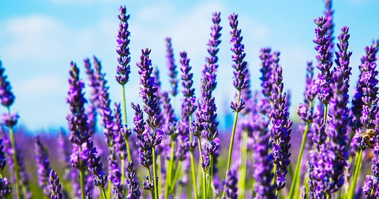

라벤더 라벤더는 꿀풀과 라반듈라속의 다년생 상록소조목으로 37종의 원종과 재배품종은 약 300여 가지기가 넘고 향기, 색상, 형태, 크기가 다양하다 지중해연안, 카나리아제도, 토루코, 인도, 소아시아, 열대북동아프리카, 아라비아, 포르투갈 등에 분포하며 다양한 종류가 여러지역에 분포하고 있다 꽃을 포함하여 식물 전체가 방향을 가지며 향료를 비롯해 가든식재, 드라이플라워, 차 요리 등 활용범위가 넓다 키는 15cm에서 1m까지 그룹별로 다르며 꽃의 색깔은 보릿빛을 띠는데 흰색, 분홍색, 노란색 꽃을 피는 품종도 있다 프랑스, 일본, 호주 등지에서는 보랏빛 라벤더 물결을 이뤄 향료산업은 물론 관광산업으로 인기를 더해가고 있다 라벤더는 보릿빛 자태가 이름답기도 하지만 오래도록 변치 않는 향기는 더욱 일품이다 또한 향기가 가지는 방충효과로 향 주머니를 만들어 휴대하거나 옷장에 넣어두어도 좋다 꽃이 만개하기 전 수확하여 번들을 만드는 여유도 가져 볼만 하다, 원산지에서는 옷을 말릴 때 라벤더 위에 널어 향이 배도록 한다